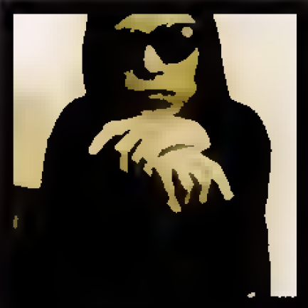

"And hear the locust and the graddhopper/Their
melancholy hurdy-hurdies play "
When Longfellow wrote these lines in 1863, the hurdy-gurdy would have been a familiar sound in an English street, now they are as rare as hen's teeth. If you've never seen one, imagine a viola redesigned by Hieronymus Bosch and fitted with a big wheel instad of a bow. The sound of the strings is complex, full of grit and grain - if much modern violin sound is as smooth as waterskiing on a lagoon, the hurdy-gurdy is en off-roud dash through a framyard on a filthy mototcycle MAybe the earthy sound is one reason why there seems to be a discreet revival of interest in this strange instrument.
In England, hurdy-gurdy revivalists include the fiery improvisor and medieval specialist Stevie Wishart, and the folk musicians Chris Stepleton and Nigel Eaton, whose recent CD The Duelists (Panic ATC) is a strong example of new English compositions in a French traditional dance style Originally from Australia, Wishart and her hurdy-gurdy surface in diverse contexts, including medieval revivalists Sinfonye and the jumpcut dada Improv of Machines From Making Sense Eaton and Stepleton, by contrast both played in the sminal folk dance group Blowzabella For The Duelists they add bagpiper Chris Walshaw to the two hurdy-gurdies,
thus building the folk equivalent to Phil Spector's wall of sound Three drone instruments at once, all in the same pitch range and all grinding forth dense, high dibre music - is this the most aural fun you can have without electricity?
In central France the hurdy-gurdy refused to die, and the bagpipe/hurdy-gurdy group is fundamentally a French style. The classic recording is Hurdy-Gurdy And Bagpipes (Auvidis Ethniques) by Vielleuy Du Bourbinnais (1985) - it's only a quartet, but at high volume this is a monolithic monument of a record Then there's Japanese quitarist Keiji Haino whose hurdy-gurdy album, The 21st Century HArd-y-Guide-yMan (PSF), is an astonishing and intuitive respnse to the timbre of the instument from a truly visionary musician Haino takes Tony Conrad's violin, John Cale's viola, his own guitar and LaMonte Young's drone, and locates them all in this European medival instrument Thus the hurdy-gurdy is dropped right in the centre of late 20th century musical concerns unstable Amvient texture, collapsing structures, eerie shamanistic singing Haino explains the hurdy-gurdy's special appeal by pointing out that it's the only instrument where you have to turn a handle Clearky Haino hasn't yet discovered the barrel organ - that's a day I look forward to,
The only European player who can match the sheer scale of Jaino's soundscapes is the improvisor Diminique Regef, whose album Tournenes (Vand'oeuvre) is another real eye-opener of hurdy-gurdy potential The gaunt and Hollow-cheeked Valentin Clastrier is another French player, who even manages to look medieval. A misfit among misfits, in some ways he's the most eccantric of the lot. He's certainly the fastest and most virtuoso player, and catlle-prods ther hurdy-gurdy mercilessly into new areas through technical and electronic modifications. For the two CDs Hérésie and Le bûcher DEs Silences (recently reissured as a double set on Auvidis Silex as Hurdy-Gurdy From The Land Of Cathars) he assembled a sic piece group ariund drums of Gerard Siracusa Most pieces are compsed by Clastrier himself, dark hued rhythmic showcases for his often frantic playing Hérésie has a tortured quality, like a sonic reworking of a Bosch painting Clastrier also sings a coiple of times, employing Mogolian overtone rechniques alongside what he calls the hurdy-gury's "cris d'orange" ("stormy shrieks") Le Bûcher des Silences (The Funeral Pxre Of Silences) is a shade more relaced, and the group members are able to stretch out more, ad if Clastner has slacked off the bonds on his demonic torture-wheel.
Musicians like Haino and Regef are improvisors in love with sound itself - their
hurdy-gurdy playing radiates astonishment and gleeful discovery of what they can achive with this contraption of gut, wood and rosin Regef sometimes produces a tone
almost indistinguishable fom a saxophone, and it's like watching a potter turn clay into a spiralling sculptural substance that seems to defy its inherent physical laws Clastrier, on the other hand, is more concerned with positioning the hurdy-gurdy in a virtuoso world where the lagacies of jazz, traditional and contemporary musics are being fused to create
something new A ferocious soloist, for Clastrier to work in an ensemble he needs players who can stand uo to him, and the most recent album I've heard suffests they may have found him Palude (Wergo 1995) is by a trio of Clastrier, clarinettist Michaek Riessler and percussionist Carki Rizzo, and if Clastrier's name heads the list, this time it's
for alphabetical reasons Palude is Italian for swamp, but no one is getting bogged down here.
The playing is highly skillful, the pace hectic, and the infuence of the fevered Italian terantella
dance is ofren audible. On clarinet Rissler has wonderfully clear sound, and employs circular breathing to create remarkable solos evoking Mediterranean reed
invited out of the harsh northerny weather to warmer climate.
Stevie Wishart and Sinfonye.
Right: Keji Haino